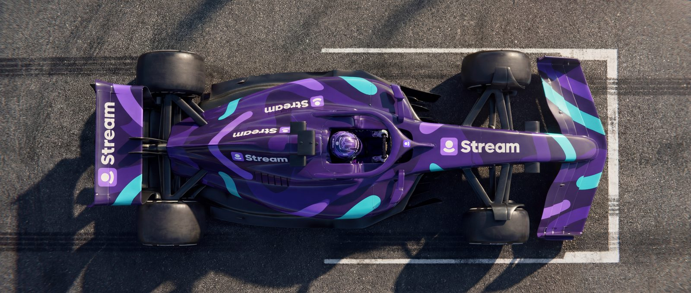
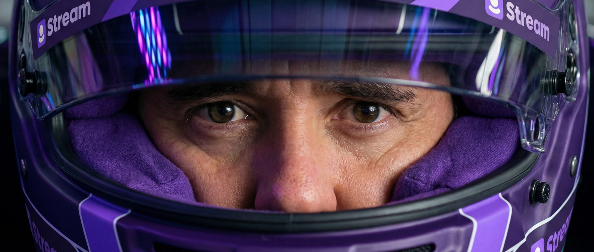
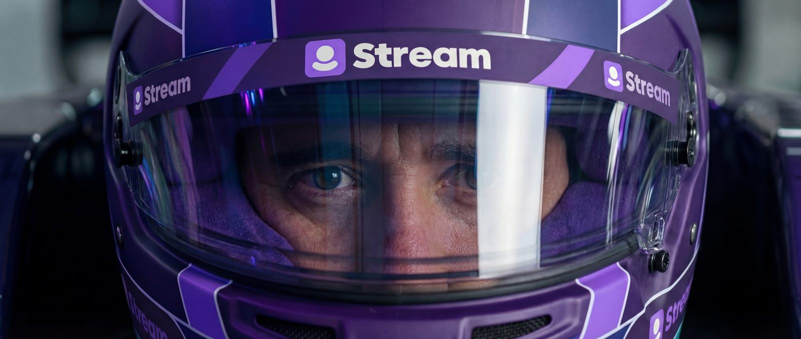
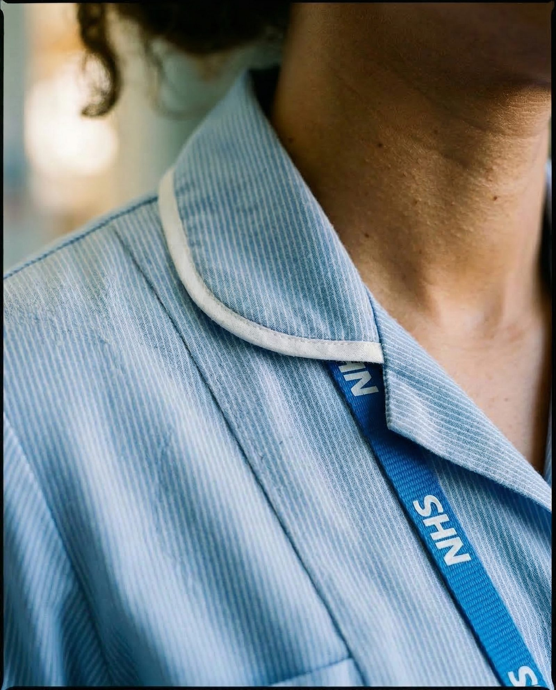
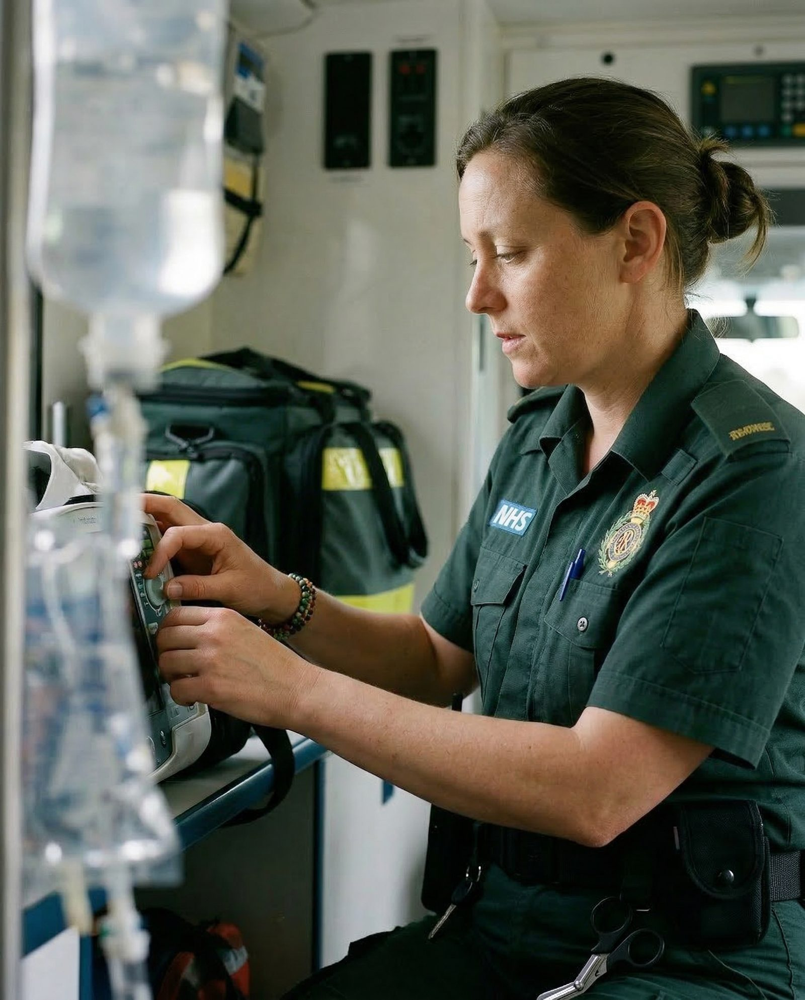
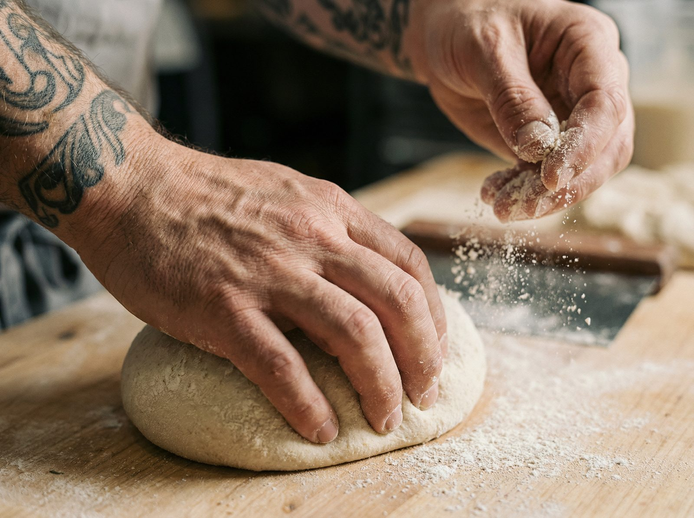
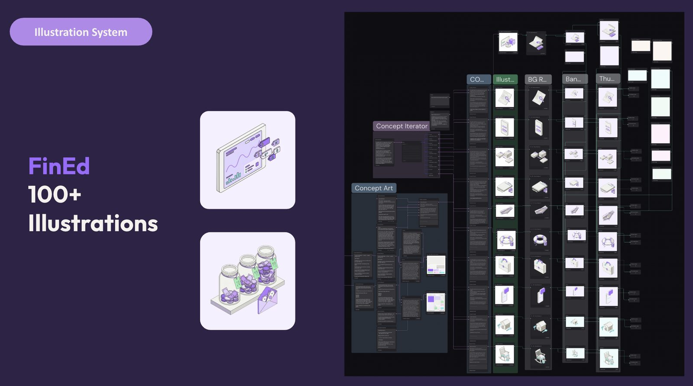
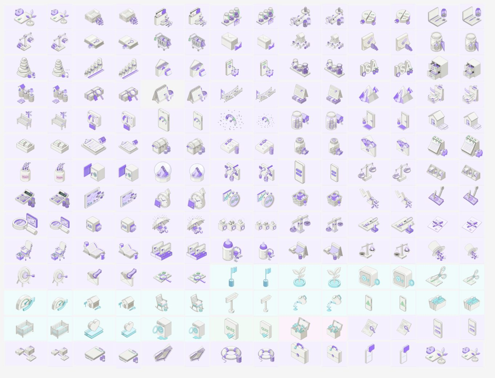

R&D 01
F1: Image-to-Video
Can image-to-video AI hold character, hyperrealism and brand accuracy shot after shot?
Dense storyboarding gave the model keyframes instead of guesswork; Nano Banana Pro handled the images, Seedance the motion, and the results were cut like any other film. The full piece lives in Work.



Rule: eliminate the guesswork.
R&D 02
Industry Character Photoshoots
How do you photograph workers from a dozen industries without a dozen photoshoots, and without it feeling like stock?
A workflow for generating industry-specific characters and carrying them through multi-shot, hyperrealistic photoshoots with Nano Banana Pro: consistent faces, wardrobe and light across every frame.



R&D 03
W4: Mixed-Media Launch Edit
How far can one edit stretch when traditional footage and AI-generated frames share the same timeline?
A product launch built from interviews, user photography animated as stop-motion cutouts, AI-generated sequences and motion graphics, with AI voice filling the narrative gaps. Production time dropped from 2 weeks to 2 days. The full film lives here.
R&D 04
Financial Education Illustration System
How do you illustrate a database of financial concepts accurately, consistently, and in any partner's brand colours?
An illustration grammar of one hero object plus supporting elements per concept, generated at scale, then handed to a product designer who batch-converted flat images to vectors and mapped colours to partner brands through the Figma MCP. I designed the pipeline and the creative; the vector automation was the designer's build.


R&D 05
The Content Library
What happens to years of content nobody can find?
Every internal asset processed through AI image analysis into a database, stored and hyperlinked through Google Drive via the Workspace API, and served through a vibe-coded front end anyone in the company can search. Underused content became self-serve infrastructure: 500+ assets and counting.